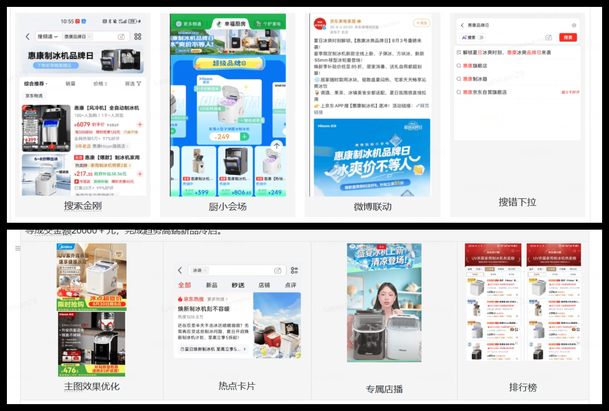

↗01 — 高端类目升级 · 场域运营
围绕制冰机品类结构升级目标，打造以 UV 杀菌为核心卖点的主题会场，包含 UV 杀菌款、升级款异形冰与小方冰等高端产品，引导消费由低端向高端升级转化，影响用户心智，拉升品类客单价。
站内布局 40 余个下拉热点卡片，科普 UV 杀菌核心价值，精准引流至会场；拓展 C3 维度全部自营及 751 家POP 店铺的商详 banner 配置，同时拓展 200 余家外部合作 POP 店铺，实现站内商品商详入口覆盖；同时进行站外广告投放，拓展触达潜在客群。
会场累计带动制冰机大盘成交金额环比提升 3.73pp，件单价提升 3.41pp，大盘 UV 环比提升 15.71pp；通过提升件单价，减缓了 7-8 月制冰机类目整体下滑对 GMV 的影响，验证了场景化会场对高端品类转化的拉动作用，沉淀了可复用的全链路场域运营打法。